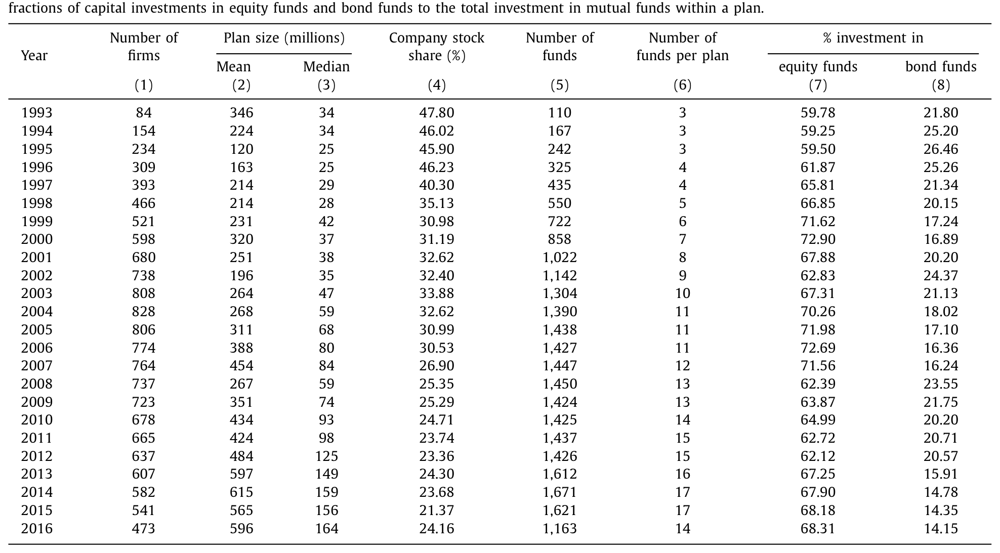
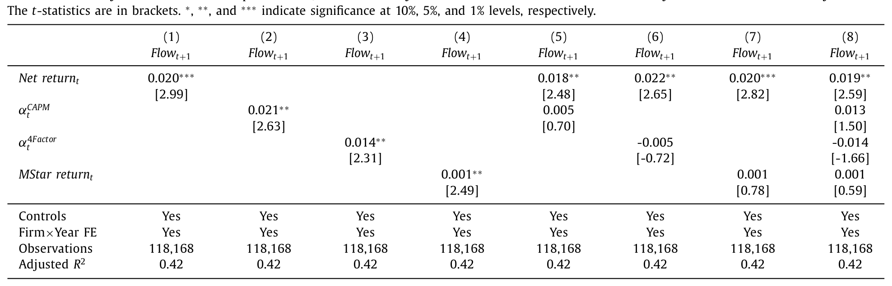
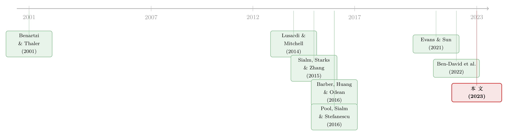

钱追着「去年的收益」跑：401(k) 里 83% 的人都在「认错了树」
本文读的是 Tran & Wang (2023, Journal of Financial Economics)：作者手工抄录了 1,551 家美国上市公司、横跨 1993–2016 年的 401(k) 计划数据，发现在计划内部，普通参与者把钱投向的是「去年涨得最好」的基金，而非风险调整后的 alpha；只有占人数 17%、却握着 61% 资产的富裕群体才真正追 CAPM alpha。正是这 17% 的人，把聚合数据「平均」成了「投资者追 alpha」的样子——而占人数 83% 的大多数，其实一直在认错那棵树。
1 引言：一个被「平均」掩盖的真相
先从一个我们以为已经有定论的问题说起。
投资者到底看什么来挑基金？过去十年里，资产管理领域最有影响力的一批文章给出了相当一致的答案：投资者并不傻，他们追的不是基金的原始收益，而是剔除了市场暴露后的超额收益。Barber, Huang and Odean (2016) 用资金流（fund flow）做了一场漂亮的「赛马」回归，结论是资金最敏感的业绩指标是 单因子 alpha（CAPM alpha）；Berk and van Binsbergen (2016) 也得到类似的结论。后来 Evans and Sun (2021)、Ben-David et al. (2022) 进一步指出，投资者其实是顺着 晨星评级（Morningstar rating）这根「第三方拐杖」在做决策。无论细节如何，这条文献给出的画像是统一的：代表性投资者（representative agent）是会做风险调整的。
但这里藏着一个很容易被忽略的前提。这些研究观察到的资金流，全都是在基金层面（aggregated fund level）汇总出来的。一只基金这个月净流入了多少钱，是把全世界所有买它的人——养老金、保险公司、对冲基金、散户——加在一起的净额。换句话说，这个「代表性投资者」，本质上是被大资金、大机构、富裕个人主导出来的一个加权平均的影子。
于是一个非常自然的问题是：如果我们能把这个平均拆开，去看一个普通的工薪族在自己的退休账户里到底怎么选基金，他追的还是 alpha 吗？
这正是本文的切口。而作者找到的答案，几乎是对前面那条文献的一记反转：在 401(k) 计划内部，占人数 83% 的大多数参与者，追的根本不是 alpha，而是最近一年的原始收益。他们盯着排行榜上去年涨得最猛的那只基金，把新钱投进去——用论文标题的话说，是 barking up the wrong tree，对着错的那棵树狂吠。
为什么 401(k) 是个理想的「实验室」？因为它有缴费上限。一个对冲基金可以往一只基金里砸几十亿，但一个员工每年能存进 401(k) 的钱有硬性天花板。这就极大地削弱了少数富人对「计划内资金流」的主导权，让数据第一次能为沉默的大多数说话。
2 数据：把 401(k) 一页页抄下来
这篇文章最硬核、也最值得致敬的部分，是它的数据。
美国证监会（SEC）规定，凡是在 401(k) 计划里向员工提供本公司股票的上市公司，每年必须提交一份 Form 11-K。这份表格会列出计划里所有可投的证券——通常是雇主自家股票加上一篮子共同基金——以及每只证券当前的投资市值。作者把 1993 到 2016 年间 1,551 家美国上市公司的 11-K 逐份手工抄录了下来，又从美国劳工部（DoL）补充了 Form 5500（记录雇员/雇主缴费额、贷款、是否为固定缴费型等计划层面信息），大约 70% 的 11-K 能通过雇主识别号（EIN）与 5500 匹配。基金层面的收益、费率则来自 免生存偏差的 CRSP 共同基金库（CRSP survivorship-bias-free mutual fund database）和晨星库。
这套数据的体量值得一提。到 2016 年底，全美有超过 5,500 万名在职员工是 401(k) 的活跃参与者，账户里躺着约 4.7 万亿美元。样本里计划规模的均值是 3.8 亿美元、中位数 6,800 万美元。更有意思的是两条长期趋势：员工投在本公司股票上的比例，从 1993 年的 48% 一路降到 2016 年的 24%；与此同时，每个计划提供的基金数量从 1993 年的平均 3 只增加到 2015 年的 17 只。在基金内部，员工把 67% 的钱配给股票型基金、20% 配给债券型基金，这个比例多年来相当稳定。

Table 1
表 1：分年度样本描述统计 —— 计划规模、公司股票占比与基金数量。
3 识别策略：在「计划内」赛马
要回答「投资者追什么」，关键是别再用基金层面的汇总数据，而要钻进单个计划内部去看资金的流向。作者构造数据的颗粒度是 plan-fund-year（计划—基金—年）三元组——也就是说，对每一家公司、每一年、计划菜单里的每一只基金，都有一条记录。
第一步是定义资金流。这里要小心：基金市值的变动一部分来自人主动投进去的新钱，另一部分仅仅是去年的钱跟着收益被动涨上去的。作者要的是前者。于是对公司 p 的计划在第 t 年投向基金 f 的资金流，定义为：
分子里 \(V_{pft}\) 减去 \(V_{pf,t-1}(1+R_{ft})\)，恰好把「被动增值」剔掉，剩下的就是参与者主动注入或抽离的资金；再除以计划总规模 \(V_{p,t-1}=\sum_{f\in\Omega_{p,t-1}}V_{pf,t-1}\)，就得到一个可比的资金流比率。这个度量与 Pool et al. (2016) 中的 NMG3 是同一思路。
第二步是把资金流回归到业绩上。核心设定是：
$$ Flow_{pf,t+1} = \beta_0\, PERF_{ft} + X_{ft}'\,\beta_1 + \mu_{pt} + \varepsilon_{pf,t+1} $$
这里 \(PERF_{ft}\) 是基金 f 在第 t 年的某个业绩指标，作者一共考察四个：[1] 净费后收益 \(R_{ft}\)；[2] CAPM alpha \(\alpha_{ft}^{CAPM}\)；[3] 四因子 alpha \(\alpha_{ft}^{4\,Factor}\)；[4] 标准化晨星收益 \(MStar\ return_{ft}\)。控制变量 \(X_{ft}\) 包括费率、换手率、基金规模对数、收益波动率与投资风格固定效应。
这套设计里最关键的一步，是那个固定效应 \(\mu_{pt}\)——公司 × 年固定效应（firm × year fixed effect）。 它把同一家公司、同一年里所有跟「计划」本身有关的因素全部吸收掉了：行业冲击、公司层面的产品市场冲击、菜单变化的时点……剩下能解释资金流的，只有同一个计划、同一年、不同基金之间的业绩差异。也就是说，回归问的是一个极其干净的问题：在你面前这张菜单上，当一只基金去年比另一只涨得更多时，你会不会把更多新钱投给它？标准误在公司和年份两个维度做了双向聚类。
alpha 本身怎么估的也值得一句。作者沿用 Barber et al. (2016) 的滚动窗口：对每只基金、每个月 m，用过去 36 个月的收益做时序回归
$$ R_{f\tau}-RF_{\tau} = a_{fm} + F_{\tau}'\,\beta_{fm} + \varepsilon_{f\tau},\quad \tau=m-1,\dots,m-36 $$
再算出月度 alpha \(\hat{a}_{fm}=R_{fm}-RF_m-F_m'\hat{\beta}_{fm}\)，最后把一年里的 12 个月度 alpha 复利成年度 alpha。CAPM 用 CRSP 市值加权指数做市场因子，四因子用 Carhart (1997) 模型（债券基金则换成 Ma et al. (2019) 等的四债券因子）。
4 主要结果：83% 的人在追「去年的收益」
回归结果几乎没有悬念。
单看每个指标自己，四种业绩度量都能预测计划内未来一年的资金流——净收益、CAPM alpha、四因子 alpha、晨星收益，系数全部显著为正。但真正的考验是把它们放进同一个回归里赛马。结果是净费后收益「干净利落地」赢下了所有对决：它单独入场时系数是 0.020（t = 2.99），和 CAPM alpha 同台时仍有 0.018（t = 2.48），而此时 CAPM alpha 的系数塌缩到 0.005、t 值只剩 0.70，统计上与零无异；四因子 alpha 甚至翻成了不显著的负号。换句话说，一旦控制住原始收益，那些花哨的风险调整指标就再也解释不动计划内的资金流了。

Table 2
表 2：计划层面的资金流—业绩关系（横向赛马回归），观测数 118,168，含公司 × 年固定效应，双向聚类标准误。
作者还担心线性回归压不住「凸的」资金流—业绩关系，于是做了两个更少参数化的稳健检验：一个沿 Barber et al. (2016)，用计划内不同业绩指标给基金排名所产生的分歧做两两配对比较；另一个沿 Ben-David et al. (2022)，把基金按业绩分成三档（tercile），看哪个指标能解释最多的资金流变动。两个检验给出同一个答案：资金流主要由原始收益解释。 这个结论不仅在「员工在多只基金之间选」时成立，连「员工在公司股票和基金之间选」时也成立；而且资金只对最近一年的收益敏感，对更早年份的收益并不买账——这是一种非常彻底的近视。
5 反转：为什么聚合之后，又变回了 alpha
故事到这里出现了一个张力：如果普通人真的只追原始收益，那 Barber et al. (2016) 那一整条「投资者追 alpha」的文献，难道全错了吗？
作者的处理很诚实，也很关键——他们把自己手里的同一份数据，重新在基金层面汇总，然后照搬文献的回归再跑一遍。结果颇耐人寻味：在聚合的基金层面，CAPM alpha 和晨星评级确实能预测未来资金流，与既有文献完全一致；而原始收益反而失效了。也就是说，同一批人、同一份数据，仅仅因为聚合的方式不同，就得出了截然相反的结论。
这怎么可能？答案藏在财富的极度不均里。作者按「人均储蓄」把样本分成四组，逐组看资金流—业绩关系，发现：储蓄最高的那一组（称作 富裕组 wealthy group）确实是按 CAPM alpha 配钱的；而其余三组（非富裕组 unwealthy group）追的是原始收益。问题在于这两群人的体量天差地别——富裕组只占全部员工的 17%，却握着超过 61% 的储蓄。他们人均存了 $121,616，是最低储蓄组的 27 倍、第二高储蓄组的 4.4 倍。
于是反转的逻辑就清楚了：当你在基金层面把所有钱加总，这 17% 的「重量级」富人的偏好被放大，整个聚合数据的资金流—业绩关系就被拽向了 CAPM alpha，看起来和文献别无二致；而在计划层面，由于缴费上限压住了富人的体量，回归被占人数 83% 的大多数主导，于是露出了「追原始收益」的真容。一个被「平均」掩盖了二十年的真相，被这套颗粒度极细的数据照了出来。
作者还排除了另一个竞争性解释：菜单变化。Sialm et al. (2015) 指出 401(k) 增删基金会显著影响资金流，Pool et al. (2016) 则发现公司倾向于加入（删除）过去表现好（差）的基金。作者沿 Sialm et al. (2015) 把资金流拆成 发起人资金流（sponsor flows） 与 参与者资金流（participant flows）：发起人（公司）的钱无论在基金层面还是计划层面都追 CAPM alpha 和晨星评级；而参与者的钱在基金层面追 alpha、在计划层面却只追原始收益——无论菜单是否变动。参与者和发起人，对的是两套完全不同的业绩信号。
6 机制：是什么撑开了储蓄鸿沟
接下来一个无法回避的问题是：到底是什么力量同时驱动了「储蓄鸿沟」和「策略分化」——为什么富人既存得多、又更会做风险调整？
作者先排查了几个看得见的决定因素：公司匹配缴费政策、计划业绩、员工任期、工资、缴费率（deferral rate，即每个发薪周期自动从工资里扣进 401(k) 的比例）。结果是前三者加起来只能解释储蓄鸿沟的 25%，剩下一大半要靠工资和缴费率来解释。而工资和缴费率，作者论证，背后站着的是 金融素养（financial literacy）——既有文献早已表明，金融素养、人力资本与股市参与是内生地纠缠在一起的（Lusardi and Mitchell, 2014；Lusardi et al., 2017）。金融素养高的人，往往工资更高、也更愿意为退休多存钱；同样是这份素养，让他们在挑基金时更懂得调整市场暴露。
为了给「富裕组更懂金融」这个说法找到独立证据，作者用参与者的 401(k) 贷款行为和资产分散度构造了三个度量，发现富裕组确实更老练：他们借得更少、还贷更快、投资也更分散。这与 Utkus and Young (2011)（金融测试分数低的人从 401(k) 借得更多）、Benartzi and Thaler (2001, 2007)（金融文盲与糟糕的分散决策相连）一脉相承。还有一个特别干净的横截面对照：非富裕组的追收益行为在主动型和指数型基金里都存在，而富裕组在指数基金里干脆没有任何资金流—业绩敏感性——这进一步印证了富裕组确实更懂行，因为对指数基金做收益排名本就是没意义的。
（关于金融素养的真实因果效力，可参见《一门高中理财课，能让金融犯罪少三成？》；而 401(k) 这类退休账户「该有多难取」的最优设计，则可参见《最优的「锁」：一笔退休金，应该有多难取出来？》。）
7 代价：追收益，到底走开了多少钱
如果追收益只是无伤大雅的习惯，这篇文章顶多算个有趣的描述。但作者要钉死的，是它不优。
他们构造了一个极其朴素的被动策略：参与者按一个事先定好的比例（比如 80% 股票、20% 债券）把新钱分配到股债之间；当计划里有多只股票（债券）基金时，就在它们之间均匀投资——这等于彻底关掉了参与者的「选基金」这个动作，逻辑上接近买一只目标日期基金（target date fund），只是资产配置比例不随时间滑动。结果是：在相当宽的一段配置比例区间里，这个什么都不挑的被动策略，都以很大的幅度显著跑赢了参与者实际观察到的投资组合。换句话说，非富裕投资者通过追收益，亲手把可观的资本利得让了出去。作者由此给出的政策含义很直白：不老练的投资者，最好别碰主动策略，老老实实被动投资。
（用真金白银的资金流去「反推」投资者偏好的另一种做法，可参见《用真金白银投出来的前景理论》；而散户在哪些角落、用什么方式参与市场，可参见《散户的栖息地》。）
8 文献脉络
把这篇文章放回历史里看，它正好坐在两条河流的交汇处。
一条河是退休账户里的行为金融。早在 Madrian and Shea (2001) 就发现 401(k) 的资产配置有强烈的惯性（inertia），Agnew et al. (2003) 也记录了类似现象；Benartzi and Thaler (2001) 指出投资者会用幼稚的 1/n 策略平摊资产，Benartzi (2001) 还专门研究了员工对自家公司股票的过度配置；Calvet et al. (2007, 2009) 则用瑞典数据量化了「分散不足」带来的收益损失。这条河告诉我们：普通人的退休投资，处处是偏误。
另一条河是资金流—业绩关系，但它几乎清一色地停在基金层面：Barber et al. (2016) 和 Berk and van Binsbergen (2016) 说资金追 CAPM alpha，Evans and Sun (2021) 和 Ben-David et al. (2022) 说资金追晨星评级。问题在于，基金层面的资金流是被大投资者主导的，刻画的是「代表性投资者」。与此并行，Sialm et al. (2015) 和 Pool et al. (2016) 把目光投向 401(k) 的计划发起人，发现是公司在「设菜单」时左右了资金流。

本文（Tran and Wang, 2023）的位置，是把这两条河接到了一起：它用计划内的颗粒度，第一次把「资金流—业绩」这套工具用在个人参与者而非代表性投资者身上，并指出参与者和发起人对的是两套不同的信号；同时，它把「储蓄鸿沟」的根源接回了金融素养这条更老的脉络（Lusardi and Mitchell, 2014）。一句话——它证明了大多数人追的，原来不是我们以为的那棵树。
评论与延伸（Q&A + 研究方向）
(a) 几个可能的疑问
Q：「追原始收益」和「追 CAPM alpha」在数据里真的能分开吗？毕竟收益高的基金 alpha 往往也高。
这正是赛马回归要解决的问题。在表 2 里，当净收益和 CAPM alpha 同时入场，净收益系数仍是
0.018（t = 2.48），而 CAPM alpha 掉到0.005、t 值仅0.70。两个指标的排名在计划内并不完全重合，正是这种分歧提供了识别力。作者还用了两个少参数化的检验（配对比较、三档分组）来交叉验证，结论一致。
Q：会不会只是样本特殊？这些公司、这些员工本来就和别的研究不一样。
这是作者最在意的反驳，所以他们做了那个关键的「自洽性」检验：把同一份数据在基金层面重新聚合，结果立刻复现了文献里「资金追 alpha / 晨星评级」的发现。既然同一批人聚合后就长成了文献的样子，那计划层面的反转就不是样本选择偏差，而是聚合方式造成的——这一步非常有说服力。
Q：公司 × 年固定效应是不是吸收得太狠，把真正想要的变异也吸走了？
它确实很「贪」，但吸走的恰恰是该吸走的：行业冲击、公司基本面、菜单时点。剩下的是同一计划、同一年、不同基金之间的业绩差，这正是「参与者在给定菜单上如何选」的纯净变异。代价是无法识别跨计划、跨时间的效应，但对本文的问题而言，这是对的取舍。
Q：被动策略跑赢，会不会只是因为那几年股票大涨，事后看当然该满仓？
作者强调结论在「相当宽的配置比例区间」里都成立，而非依赖某一个幸运的股债比。不过这仍是一个事后的反事实演练，没有交易成本与税收的完整建模，严格说它衡量的是「选基金这个动作」的价值，而非一个可直接照搬的投资建议。
Q：富裕组追 alpha，是因为他们更聪明，还是因为他们请得起投顾、信息更好？
论文用贷款行为和分散度三个度量论证了富裕组「更老练」（借得少、还得快、更分散），并把它归因到金融素养。但素养、财富、投顾可及性在数据里是缠在一起的，文章给的是相关证据而非干净的因果分离——这恰恰是后续研究的空间。
Q：参与者和发起人对不同信号，这件事新在哪？
Sialm et al. (2015)、Pool et al. (2016) 已经说明发起人（公司）在「设菜单」时会逐业绩行事。本文的新意是把资金流拆成 sponsor 与 participant 两支后发现：发起人追 alpha、参与者在计划层面追原始收益，二者在同一个计划里同时发生。这把「谁在驱动资金流」这个问题拆得更细了。
(b) 几个可能的研究问题与提案
1. 把同样的「聚合悖论」搬到公司债基金。 【经济故事】公司债基金的投资者结构同样是少数机构 + 大量散户/养老金，且债券基金的「业绩」更难被普通人正确风险调整（利率久期、信用利差远比股票 beta 隐蔽）。如果连股票基金里普通人都只看原始收益，债券基金里这种「认错树」可能更严重，且后果更直接地体现在久期/信用错配上。 【可行性】中。CRSP 债券基金库 + Morningstar 可得；难点在构造可信的债券「alpha」（需 Ma et al., 2019 式四债券因子）以及找到计划内的颗粒度数据——Form 11-K 里债券基金的覆盖相对薄。
2. 外资参与者会不会「认错另一棵树」？ 【经济故事】把视角换到持有美国共同基金/ETF 的外国投资者：他们面对汇率、税收、信息劣势，挑基金时盯的可能既不是原始收益也不是本币 alpha，而是某种被汇率污染的「名义收益」。这能把「聚合悖论」推广到跨境维度，检验信息劣势是否制造出又一类系统性的追收益群体。 【可行性】中偏低。需要 TIC 或基金层面的外资持有数据，且很难做到本文计划内的颗粒度；识别上要小心汇率与收益的机械相关。
3. 自动登记/默认选项改革，能不能把「追收益的手」按住？ 【经济故事】本文显示追收益集中在低素养、低储蓄群体，而这群人恰恰是 2006 年 PPA 之后自动登记（auto-enrollment）和目标日期基金默认选项最直接覆盖的人。一个自然的实验是：在引入默认 TDF 前后，参与者的资金流—业绩敏感性是否被显著压低？ 【可行性】高。Form 11-K + Form 5500 已有时间维度，可用计划引入 TDF/自动登记的时点做交叠双重差分（staggered DiD），并直接用本文的 plan-fund-year 框架度量敏感性变化。
4. 把「公司股票 vs 基金」的选择单独拎出来做信用/风险分析。 【经济故事】员工把 48%→24% 的钱从自家股票挪走，这个长期再配置过程里，谁挪得快、谁挪得慢？如果低素养群体既追基金收益、又对自家股票（一种极度不分散的资产）过度黏着，那「素养鸿沟」会在退休财富的尾部风险上被双重放大。 【可行性】高。本文数据已含公司股票份额的逐年记录，可直接把「公司股票减持速度」与素养代理、公司股价表现挂钩。
我的判断是：这篇文章最大的贡献不在某个新方法，而在一份别人没有的数据，加上一个被聚合长期掩盖的事实。「同一份数据，换个聚合层级就翻转结论」这一招干净、可复制、说服力强，足以让人重新审视「投资者追 alpha」这条被引用了无数次的结论——它对的是代表性投资者，不是大多数人。
对识别，我有两点保留。其一，机制那一环是相关性而非因果：金融素养、财富、工资、投顾可及性在数据里高度共线，作者用贷款和分散度做代理已经很努力，但「是素养导致了追收益」终究缺一个外生冲击来钉死。其二，「被动跑赢」是事后反事实，没有把交易成本、税收和真实菜单约束完整纳入，作为政策结论要打个折扣。
后续我最想看到的，是把这套 plan-fund-year 框架接到一个外生的素养或默认选项冲击上（比如州层面的高中理财课强制令、或计划引入自动登记的时点），看看「追收益的手」是否真的会被按住——那才是从「描述一个偏误」走向「能不能纠正它」的关键一步。
参考文献
- Agnew, J., Balduzzi, P., Sunden, A. (2003). Portfolio choice and trading in a large 401(k) plan. American Economic Review 93(1), 193–215.
- Barber, B.M., Huang, X., Odean, T. (2016). Which factors matter to investors? Evidence from mutual fund flows. Review of Financial Studies 29(10), 2600–2642.
- Ben-David, I., Li, J., Rossi, A., Song, Y. (2022). What do mutual fund investors really care about? Review of Financial Studies 35(4), 1723–1774.
- Benartzi, S. (2001). Excessive extrapolation and the allocation of 401(k) accounts to company stock. Journal of Finance 56(5), 1747–1764.
- Benartzi, S., Thaler, R.H. (2001). Naive diversification strategies in defined contribution saving plans. American Economic Review 91(1), 79–98.
- Benartzi, S., Thaler, R. (2007). Heuristics and biases in retirement savings behavior. Journal of Economic Perspectives 21(3), 81–104.
- Carhart, M.M. (1997). On persistence in mutual fund performance. Journal of Finance 52(1), 57–82.
- Evans, R.B., Sun, Y. (2021). Models or stars: The role of asset pricing models and heuristics in investor risk adjustment. Review of Financial Studies 34(1), 67–107.
- Lusardi, A., Michaud, P.-C., Mitchell, O.S. (2017). Optimal financial knowledge and wealth inequality. Journal of Political Economy 125(2), 431–477.
- Lusardi, A., Mitchell, O.S. (2014). The economic importance of financial literacy: Theory and evidence. Journal of Economic Literature 52(1), 5–44.
- Ma, L., Tang, Y., Gomez, J.-P. (2019). Portfolio manager compensation in the U.S. mutual fund industry. Journal of Finance 74(2), 587–638.
- Madrian, B.C., Shea, D.F. (2001). The power of suggestion: Inertia in 401(k) participation and savings behavior. Quarterly Journal of Economics 116(4), 1149–1187.
- Pool, V.K., Sialm, C., Stefanescu, I. (2016). It pays to set the menu: Mutual fund investment options in 401(k) plans. Journal of Finance 71(4), 1779–1812.
- Sialm, C., Starks, L.T., Zhang, H. (2015). Defined contribution pension plans: Sticky or discerning money? Journal of Finance 70(2), 805–838.
- Tran, A., Wang, P. (2023). Barking up the wrong tree: Return-chasing in 401(k) plans. Journal of Financial Economics 148, 69–90.
- Utkus, S.P., Young, J. (2011). Financial literacy and 401(k) loans. In Financial Literacy: Implications for Retirement Security and the Financial Marketplace, 59.